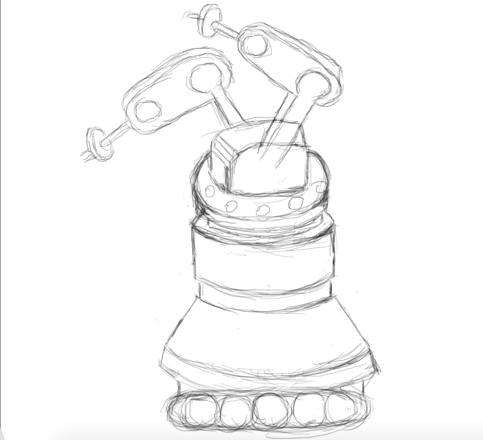

People who lack experience in cooking or have schedules that are too full to allow time for cooking may resort to unhealthy premade packaged foods for themselves and their families. These foods, chock-full of sodium, added sugars, fat, and additives are poisonous to the body, and consumption can result in serious complications with the kidneys, arteries, heart, and even the brain.
The RTC 9000 is a unique, high-tech robot made for people who want to eat well. Not everyone has the time or experience to compose full, healthy, and balanced meals, so we created the RTC 9000 to help people eat delicious, fresh food. The RTC is able to cook over 9000 recipes without any human assistance.
This robot moves across the floor on wheels and uses its arms to perform a wide variety of human-like actions. Because of its robotic properties it can perform them more efficiently and thoroughly than a human. It is able locate the materials and ingredients it needs without any assistance. It is also programmed to clean any messes and dirty dishes it generates.
